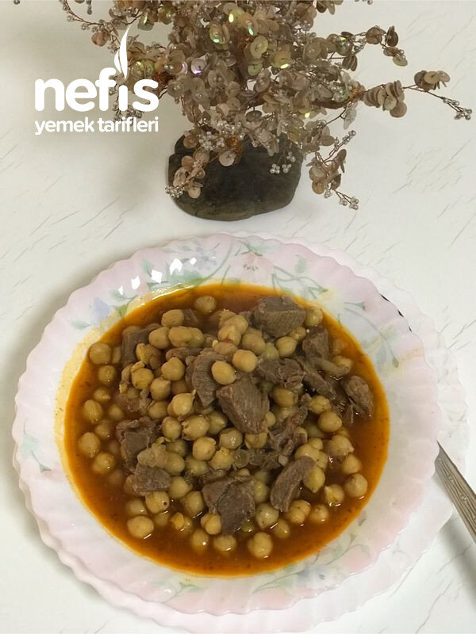
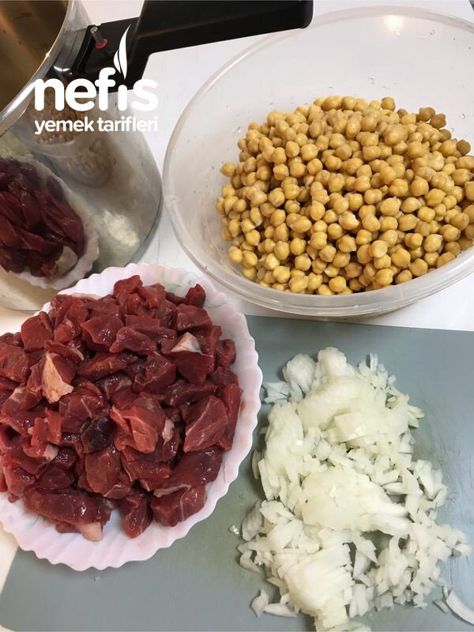
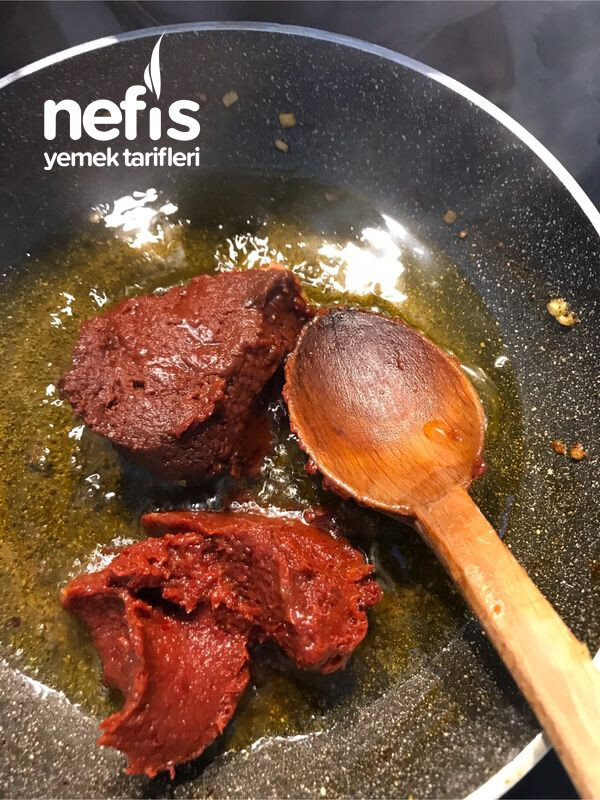
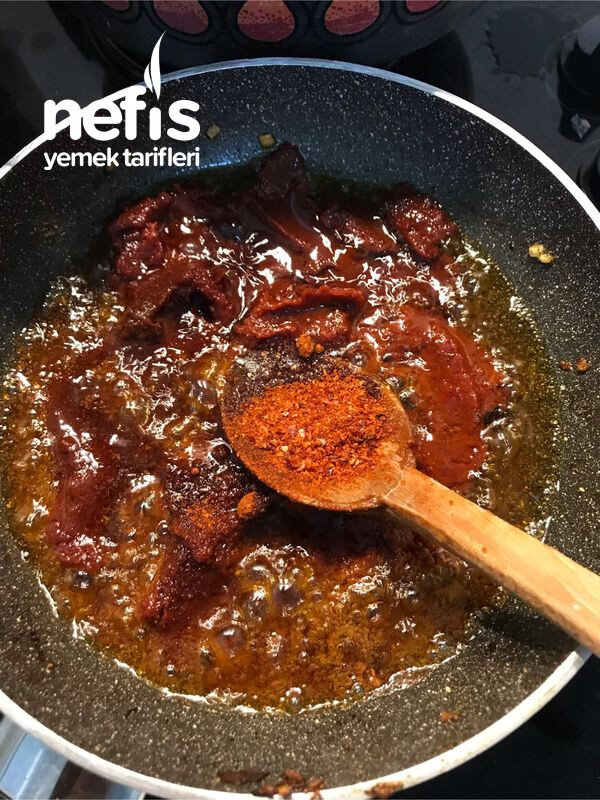
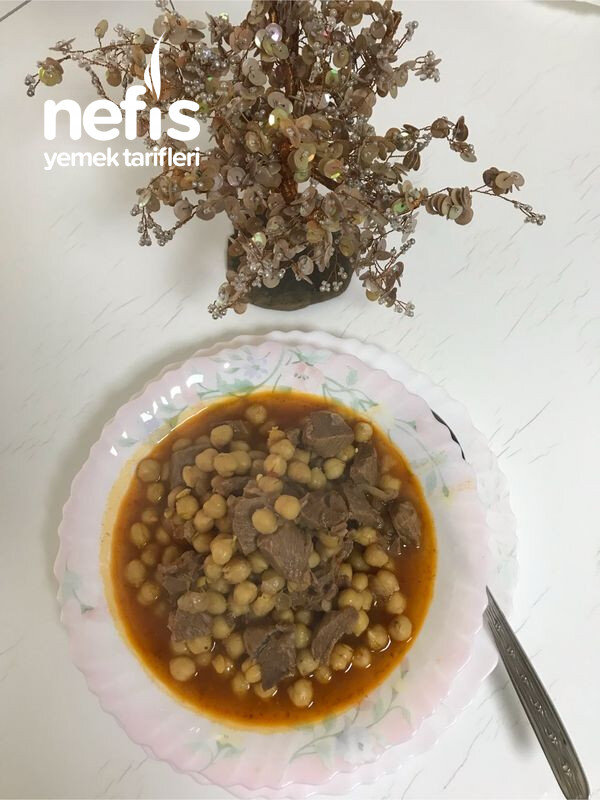

Etli Nohut Yemeği
2021-06-28
← Tüm tarifler

🍽️ 8-10 kişilik
⏱️ Hazırlık: 10 dk
🔥 Pişirme: 5 dk
🏷️ Bakliyat Yemekleri
Malzemeler
1 kase akşamdan ıslatılmış nohut
1 kase kuşbaşı et
1 kaşık domates salçası
1 kaşık biber salçası
1 adet soğan
1 çay kaşığı toz kırmızı biber( isteğe bağlı pulbiber)
Bir kahve fincanı kadar zeytinyağı
Su
Tuz
Hazırlanışı
Nohutumuzu akşamdan 1 çay kaşığı kadar tuz ve bol su ile ıslatıyoruz.
Sabah yıkadığımız nohutları düdüklü tenceremize alıyoruz.
Üzerine küçük doğradığımız soğanları ve kuşbaşı etimizi ilave ediyoruz.
Üzerini birkaç parmak geçecek kadar su ilave ediyoruz.
Düdüklü tenceremizin kapağını kapatıp ocağa alıyoruz.
Benim düdüklüm fissler, iki çizgi çıktıktan sonra 5-6 dakika yeterli geliyor.
Pişme süresi diğer düdüklü tencerelerde farklı olacaktır, ona göre ayarlanır.
Ocağı kapatıp salçalı yağını hazırlıyoruz.
Yağı tavamıza alıyoruz.
Yağımız ısınınca salçaları ve tozbiber ilave ediyoruz.
Bir fincan kadar su ilave ederek iyice karıştırıyoruz.
Hazırlanan sosu nohutumuzun üzerine ilave ederek 3-5 dakika kadar kaynatıyoruz.
Kıvamı çok yoğunsa sosu hazırlarken suyunu daha fazla koyabiliriz.
Tuzunu ayarlayarak ocağı kapatıyoruz.
Nefis nohutumuzu istediğimiz zaman servis ediyoruz.
Fotoğraflar



